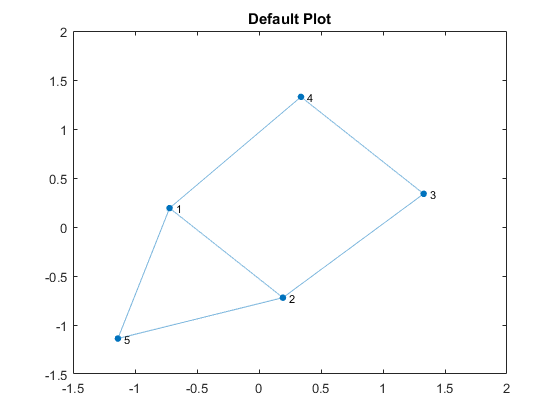
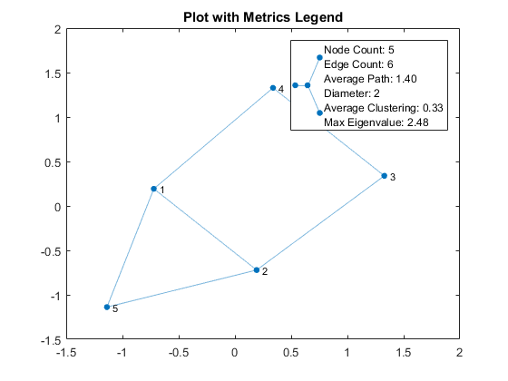
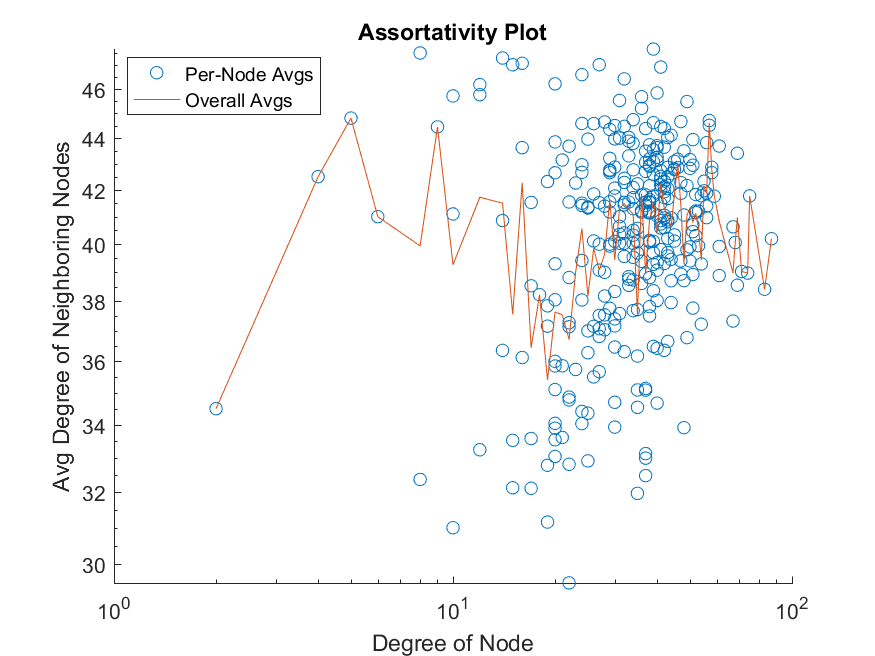
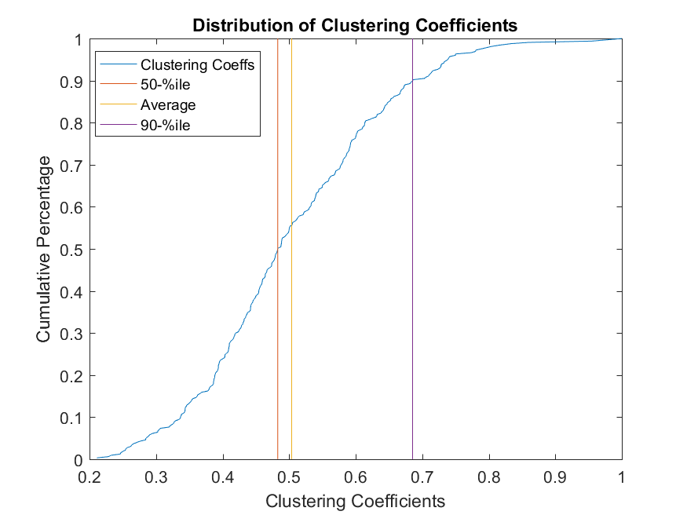
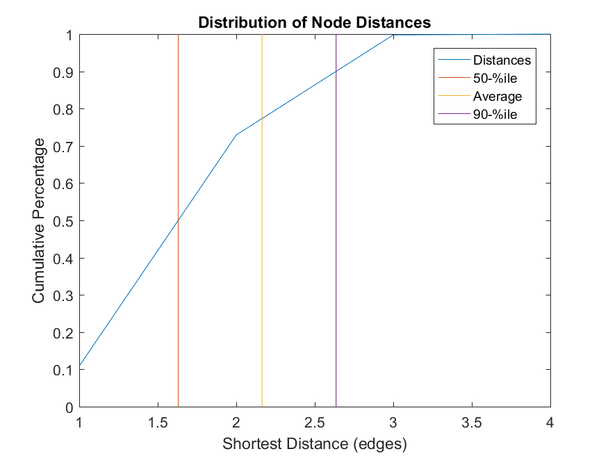
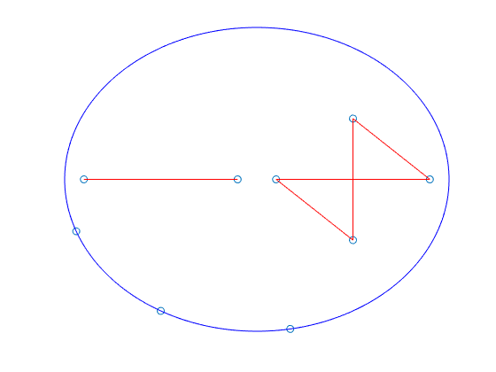

(4) Data Visualization and Animations
Contents
Intro
Created by Brighton Ancelin
This toolbox has four main objectives:
- Help the user import a graph from a file or matrix into MATLAB as a graph object
- Help the user perform common operations and alterations on graph objects
- Provide tools for basic analysis of graph objects and calculation of key metrics
- Provide a variety of different visualization means for graph objects, both time-varying and time-invariant
This page discusses the final point in our list, how to visualize graph data.
Basic Graph Plot
While many larger graphs look like rats' nests when plotted, such plots can still convey meaningful information. For smaller graphs, such plots are understandably more interpretable. The default MATLAB plot function renders graph plots, and more documentation on that can be found in the MATLAB documentation. However, the function plotAndOverlayGraphMetrics both plots the graph object and adds a legend containing several metrics values. In some instances, such a function can be desirable.
graphObj = graph([1,2,3,4,1,5,],[5,3,4,1,2,2,]); plot(graphObj); title('Default Plot'); plotAndOverlayGraphMetrics(graphObj); title('Plot with Metrics Legend'); 
Graph Metrics Visualizations
Many researchers want to have graphs and plots of metrics data to interpret and/or showcase. There are currently four metrics visualization functions: exportAssortativityVis, exportClustDistribVis, exportDistDistribVis, and exportMetricsVisualizations. More information on each function can be obtained through the MATLAB help command, but in short these functions do the following:
- exportAssortativityVis: Plots neighbors' degrees against nodes' degrees
- exportClustDistribVis: Plots the distribution of local clustering coefficients across the population of all nodes
- exportDistDistribVis: Plots the distribution of shortest path distances across the population of all nodes
- exportMetricsVisualizations: Calls the above three functions
All of these functions require two parameters: a metrics struct and a netname to be used in the filename of the exported image. There is also an optional output of the first three functions: the figure object of the visualization. If the output argument is not used, the figure will close automatically.
Note: These functions all require user approval of the visualization prior to exporting.
  
Convention-Style Visualizations
Convention-style visuals, in short, are those where lone nodes are pushed to an outer ring, and connected components are displayed in the center of this outer ring. Nodes move around over time as they form and break edges, much like people at a convention would do. More details can be found with the MATLAB command: help getConventionStyleVisualData
Three basic commands are associated with the convention-style visuals:
- plotConventionStyleVisual: plots a single frame of a graph in the convention-style format.
- plotConventionStyleVisualAnimated: plots an animation of convention-style visuals, with nodes moving over time
- exportConventionStyleVisualAnimated: exports a GIF file of an animation of convention-style visuals, with nodes moving over time
More information on each of these functions can be found using the MATLAB help command, and an example script using animations can be found in 'example_animationScript.m'

graphObj = graph([1,1,2,3,4],[2,3,5,5,9]); plotConventionStyleVisual(graphObj);
Edge-Updating Visualizations
Edge-updating visuals, in short, are those where the overall graph (the amalgam of all edges over all time series data) is used to position all nodes, and then edges are drawn and erased as they are formed and destroyed. More details can be found with the MATLAB command: help exportEdgeUpdatingVisualAnimated
GIF files of such animations can be generated with the exportEdgeUpdatingVisualAnimated function. An example script using this function can be found in 'example_animationScript.m'

Infection Spreading Visualizations
Both convention-style and edge-updating animations can be used to show how an infection spreads across a population. Infection data can be encoded as a matrix of 0s and 1s, where each row represents a node, each column represents a time step, and a 0 signifies healthy while a 1 signifies infected (e.g. if matrix(i,j) = 1, then the ith node is infected at time step j). Using the exportConventionStyleInfectionVisualAnimated and exportEdgeUpdatingInfectionVisualAnimated functions, one can create export these animations as GIFs. These functions' animations vary from their infection-blind counterparts in that infected nodes are colored red whereas healthy nodes are colored blue, and active edges are colored green to avoid visual confusion with node colors.
While the intention of these animations was infection spread, they can be used to signify any boolean state spreading across a population.